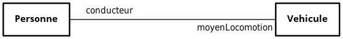

Représenter une structure en UML
Dialoguez avec les développeurs grâce à l’UML
Dialoguez grâce au diagramme de classeDéjà entendu parler de POO ? La programmation orientée objet ?
Dans un langage de programmation orientée objet, le développeur définit des objets. Un objet, c’est un concept, une idée ou une chose du monde réel. Chaque objet possède des attributs (ce sont ses caractéristiques) ainsi qu’un ensemble de comportements possibles.
Le diagramme de classes UML est aussi utilisé par les développeurs qui codent avec des programmes orientés objet : Python, PHP, C++, Java, etc
L'utilisation du diagramme de classes UML pour la modélisation de la base de données s'est généralisée avec la croissance de la programmation objet.
Étant donné qu'une base de données fonctionne quasiment toujours en dialogue avec un programme informatique, il y a des échanges d'informations entre les deux. Si des deux côtés, les concepts manipulés sont les mêmes, alors c'est bien plus simple pour communiquer entre ceux qui s'occupent de la BDD et ceux qui codent le programme. On comprend donc pourquoi le diagramme de classes UML est utilisé des deux côtés de la barrière (côté base de données et côté applicatif).
Certains langages orientés objet proposent même des fonctionnalités (on appelle cela des librairies) qui permettent de créer automatiquement la structure de la base de données relationnelle à partir du code informatique écrit en ce langage !
Associez vos classes pour garder du lien dans vos données
Constituez vos associationsPour créer vos associations, je vous propose de tracer des traits qui relient vos classes, et de leur donner un nom, de préférence un verbe tel que « réalise », « produit », etc.
Il y a un concept très important quand on définit une association : c’est la notion de multiplicité.
Elle permet de dire si un film peut être réalisé par UN SEUL ou par PLUSIEURS réalisateurs, et inversement : si un réalisateur peut produire UN SEUL ou PLUSIEURS films.
Il ne faut pas négliger les multiplicités, car ceci aura des implications dans le SGBDR. Par exemple, si vous considérez à tort qu’un réalisateur ne peut réaliser qu’un seul film, alors la structure de votre BDD ne sera pas faite pour accueillir plus d’un film par réalisateur : et pour modifier cette structure, ce sera un peu plus complexe qu’on ne le pense.
Il existe 3 types d'associations
- Plusieurs à plusieurs (many-to-many) : un film peut être réalisé par plusieurs réalisateurs, et un réalisateur peut avoir réalisé plusieurs films
- Un à plusieurs (one-to-many) ou plusieurs à un (many-to-one) : un film n’est réalisé que par au plus 1 société de production, et une société peut produire plusieurs films ;
- Un à un (one-to-one) : vous n’avez pas ce cas dans vos données, mais c’est lorsqu’une instance d’une classe A ne peut être associée qu’à au plus 1 instance d’une classe B. Et qu’une instance de B ne peut être associée qu’à au plus 1 instance de A. Par exemple, un cinéma n’a qu’une seule adresse, et une adresse donnée ne peut accueillir qu’un seul cinéma.
Ensuite, vous pouvez aller plus loin dans la précision des
multiplicités.
Par exemple, quand vous dites « au plus 1 », vous pouvez préciser
s’il s’agit de « strictement 1 », ou bien « 0 ou 1 ». Aussi, quand
vous dites « plusieurs », vous pouvez entendre « 0, 1 ou plus », ou
bien « strictement plus que 1 », etc.
Voici comment noter cela :
Voici comment s'utilisent ces notations:
- Un film peut être réalisé par au moins 1 réalisateur (noté 1..* ) , et un réalisateur peut avoir produit 0, 1 ou plusieurs (noté * ) films :

- Un film est réalisé par exactement 1 société de production ( 1 ), et une société peut produire 0, 1 ou plusieurs films ( * ) :

- Un cinéma a exactement 1 adresse ( 1 ), et une adresse donnée ne peut accueillir que 0 ou 1 seul cinéma ( 0..1 ) :
Les termes multiplicité et cardinalité sont souvent confondus. Mais officiellement, une multiplicité désigne l’ensemble des cardinalités possibles entre deux instances.
Par exemple, on dira qu’une société de production peut produire 0, 1 ou plusieurs films. Cela correspond à une multiplicité de 0..*.
sachez qu’il est possible de donner des caractéristiques à un lien, grâce à une classe d’association. Ici, comme l’association s’appelle « est tourné », vous pouvez appeler votre classe « Tournage » :
Il existe un type d’association particulier, appelé l’association de composition. Celle-ci s’utilise quand une classe est un composant d’une autre classe.
Prenez l’exemple d’un circuit électronique : il est composé de composants électroniques : diodes, condensateurs, microprocesseurs, etc. Ainsi, on peut avoir une association de composition entre une classe CircuitElectronique et une classe ComposantElectronique.
Imaginez que votre circuit soit défaillant et que vous deviez donc le jeter. Dans ce cas, vous jetez automatiquement tous ses composants. C’est là la particularité de la composition : le composant (une diode, par exemple) ne peut exister que via son composite (circuit électronique).
Pour votre appli, vous pourriez considérer qu’un tournage est un composant du film. En effet, rien ne sert d’enregistrer dans votre BDD un tournage si vous ne savez pas à quel film il est associé.
On peut aussi avoir une composition entre Film et SocieteDeProduction. En effet, un film ne peut exister si une société ne l'a pas produit. De plus, il existe parfois des films différents ayant le même nom (exemple : au moins quatre films portent le titre Home). Ainsi, pour identifier un film de manière certaine, on a besoin de son titre mais aussi du nom de sa société de production, ce qui prouve le lien de dépendance entre ces deux classes.
Voici comment cette composition aurait été représentée : avec un losange noir (plein) du côté du composite :
La composition s’emploie quand ces trois caractéristiques sont réunies :
- Le composite est « composé » de composants.
- L’association de composition est de type un-à-plusieurs, car le composite peut avoir plusieurs composants (0..1, 1, *ou1..*), et le composant appartient à un et un seul composite (la multiplicité est donc forcément1, rien d’autre) : on dit que le composite n’est pas partageable.
- Il y a un lien entre le cycle de vie du composite et du composant : un composant disparaît dès que l'objet composite auquel il appartient est supprimé.
La composition est un cas particulier d’association un-à-plusieurs.
Voici la dernière mouture de notre modélisation UML

Jusqu’à maintenant, nous avons parlé de films de manière générale. Mais nos données sont un peu plus précises que cela. En effet, ce que nous avons appelé « film » peut en réalité être un long-métrage, un téléfilm ou une série (diffusée sur le web ou à la télévision). Pour être plus correct, nous allons maintenant employer le terme « Oeuvre » au lieu de « Film ». Une œuvre sera donc soit un long-métrage, soit un téléfilm, ou une série.
Un long-métrage est un film tel que nous l’entendons habituellement, un téléfilm est un film spécialement conçu pour passer à la télévision plutôt qu’au cinéma, et une série est un enchaînement de plusieurs épisodes, souvent regroupés en saisons.
Jusqu’à maintenant, le type de l'œuvre est enregistré dans l’attribut typeDeTournage
Cependant, cet attribut ne sera utilisé que si l'œuvre est une série. Il restera vide si l'œuvre est un téléfilm ou un long-métrage. Cette solution n’est donc pas optimale. L’idéal serait de placer cet attribut dans une classe Serie .
On fait cela via la notion d’héritage, comme ceci :
La relation d’héritage se représente par une flèche triangulaire blanche (vide). Elle indique que la classeOeuvre(appelée classe mère) est plus générale que ses classes filles, qui sont plus spécialisées.
Ainsi, toutes les classes filles (Telefilm, Serie et LongMetrage) héritent deOeuvre, et cette dernière transmet automatiquement à ses filles ses attributs et ses méthodes. De cette manière, toutes les classes filles possèdent l’attribut Titre. La classe Serie a quant à elle deux attributs :Titre et Saison.
Sur ce schéma, les classes Telefilm et LongMetrage sont vides. Ce n’est pas grave ! Mais si vous aviez eu plus d’informations dans le fichier, vous auriez pu ajouter, par exemple, un attribut chaine pour indiquer la chaîne de télévision sur laquelle est diffusée le Telefilm.
on peut aussi enchaîner les relations d’héritage, en créant les classesSerieTV et SerieWeb
Lorsque l’on utilise l’héritage, il est parfois utile de spécifier qu’une classe est abstraite, c’est-à-dire qu’elle ne peut pas être instanciée.
C’est votre cas : dans la BDD, vous voulez qu’une œuvre soit obligatoirement un téléfilm, une série TV, une série web ou un long-métrage. La notion d'œuvre est trop générale pour que vous l’acceptiez. En effet, considérer un téléfilm simplement comme une oeuvre, c’est perdre les informations spécifiques au téléfilm.
Bref, on veut qu’aucune œuvre soit enregistrée dans la BDD sans préciser si c’est un téléfilm, une série ou un long métrage.
Pour indiquer une classe abstraite, il suffit de mettre son titre en italique. Voici donc ce que cela donne si vous définissez Oeuvre et Serie comme abstraites :
Une classe abstraite est toujours héritée. Elle peut d’ailleurs être héritée par d'autres classes abstraites, mais en fin de chaîne, il doit y avoir une classe non abstraite.
L'agrégation
’agrégation s’utilise lorsqu’une classe est un ensemble ou un regroupement d'objets. Elle est très similaire à une association classique, et que vous l'utilisiez ou non, cela n’aura aucune implication lors de la traduction du MCD vers le MLD.
Elle se représente comme ceci, avec un losange blanc (vide) :

Contrairement à la composition, il n’y a pas de contrainte sur les multiplicités, ni sur le cycle de vie des objets agrégés (ils peuvent exister même lorsque l’objet agrégeant disparaît).
L’association ternaire
Il est possible de créer des associations entre plus que 2 classes. Ce sont les associations N-aires. Voici un exemple d’association ternaire :
En pratique, on n’utilise jamais d’association de degré supérieur à trois. De plus, les associations ternaires peuvent toujours être transformées en trois associations binaires, en transformant l’association en une nouvelle classe, comme ceci :
Il est conseillé de ne pas abuser des associations ternaires, car elles sont souvent moins intelligibles.
Les notes
l est possible d’ajouter des notes au diagramme de classes. Elles servent à apporter tout type de précisions. Notamment les contraintes sur certains attributs.
Sur votre diagramme, vous auriez pu poser la contrainte que l’attribut dateDeDebut doit être une date antérieure à dateDeFin. Eh oui, cela paraît logique, mais il faudra le spécifier à votre SGBDR car il ne le fera pas automatiquement !
Les notes servent aussi à préciser les domaines des attributs quand ceux-ci sont plus complexes que Entier, Date, Texte, etc.
Les doubles associations
Deux classes peuvent être liées entre elles via deux (ou plus) associations.
Ce serait le cas lorsqu’une personne écrit un livre, et lorsqu’une autre personne traduit ce livre dans une autre langue :
Dans ce cas, il est nécessaire de donner un nom aux associations pour les différencier.
Les rôles de classes
Plutôt que de donner un nom aux associations, vous pouvez aussi caractériser une association par le rôle que tient chacune des deux classes. C’est le cas dans cet exemple, où on peut remplacer le nom de l’association « conduit » par « conducteur » et « moyen de locomotion » :
C’est à vous de choisir si vous trouvez cette manière plus simple à comprendre. Si vous indiquez les rôles, pas besoin d’utiliser de verbes.